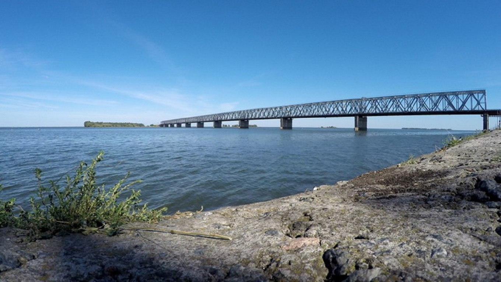
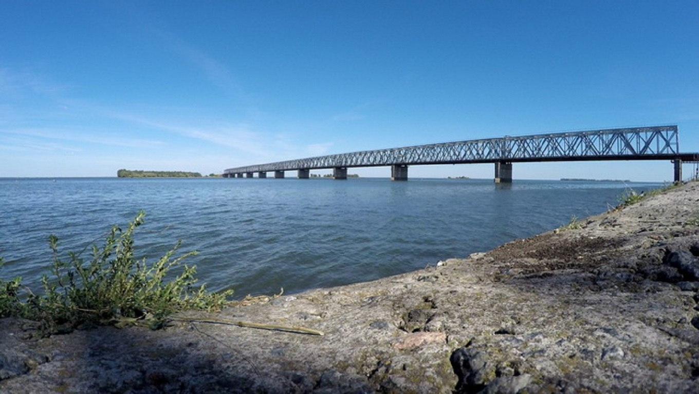

Черкаська гребля є найбільшою в Україні, сягаючи загальної з мостом довжини приблизно 13-13,5км. За день через греблю проїжджає до 11 тис. автомобілів!!!
Дамба
Черка́ська гре́бля — транспортний комплекс, Металевий фермовий міст
що збудований в місті Черкаси довжиною за різними даними 1172–1174 м і шириною 7 м.
і перетинає Кременчуцьке водосховище Міст має судноплавні прольоти — третій і четвертий
збудоване на річці Дніпро. з правого берега — мають ширину 100 м, висоту 12,5 м.
Комплекс складається з Максимальна глибина під мостом — 15 м.
металевого мосту та бетонно-земляної греблі Рух пішоходів та велосипедистів через міст повністю перекрито.
Міст, як важливий об'єкт транспортної інфраструктури,
знаходиться під цілодобовою охороною
 Дамба

Дамба
